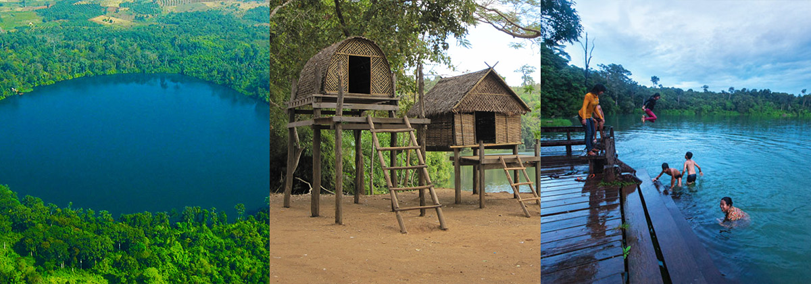

Ratanakiri, a province in the far northeastern corner of Cambodia, is a land of untamed wilderness, vibrant cultural heritage, and striking natural landscapes that remain largely untouched by modern development. This remote region, often referred to as Cambodia's "Wild East," is bordered by Laos to the north and Vietnam to the east, creating a unique cultural and geographical crossroads. The province is characterized by its rugged terrain, featuring dense tropical rainforests, rolling hills, and red earth that gives the land a distinct hue, particularly during the rainy season when the soil’s color intensifies.
One of Ratanakiri's most captivating features is its ethnic diversity. The province is home to several indigenous groups, including the Tampuan, Kreung, Jarai, and Brao, who have lived in these highlands for centuries. These communities maintain rich traditions, with distinct languages, spiritual practices, and lifestyles that are closely connected to the land. Their villages, often constructed with traditional wooden stilt houses, offer a glimpse into a way of life that has remained largely unchanged despite the pressures of modernization. Visitors to Ratanakiri can experience these cultures firsthand, whether by participating in traditional ceremonies, exploring local markets, or trekking through the countryside to visit remote villages.
The natural beauty of Ratanakiri is equally compelling. The province is renowned for its numerous waterfalls, such as Cha Ong, Ka Tieng, and Kachanh, each offering a serene and picturesque retreat surrounded by lush vegetation. Yeak Laom Lake, a perfectly round crater lake formed by an ancient volcanic eruption, is one of the province’s most famous attractions. The lake’s clear, blue waters are revered by local indigenous communities, who consider it sacred. Visitors can swim in the lake, hike around its perimeter, or simply relax on its shores, enjoying the tranquility of this pristine environment.
Ratanakiri is also known for its rich mineral resources, particularly gemstones like zircon and blue sapphires. The province’s gem mines have attracted prospectors for decades, adding another layer to its complex history. The rugged landscape and the province’s remote location have kept much of Ratanakiri’s natural environment relatively intact, providing a sanctuary for wildlife and a destination for ecotourism. The province’s national parks and protected areas, such as Virachey National Park, are home to diverse flora and fauna, including rare species like the clouded leopard and the Asian elephant.
Despite its natural wealth and cultural richness, Ratanakiri remains one of Cambodia's least developed provinces. Infrastructure is limited, with basic roads and facilities, making travel here an adventure in itself. However, for those willing to venture off the beaten path, Ratanakiri offers an unparalleled experience of Cambodia’s wild and untamed beauty, far removed from the more tourist-heavy destinations in the country. The province’s remoteness, combined with its natural and cultural treasures, makes it a place of great intrigue and allure for travelers seeking to explore the lesser-known corners of Southeast Asia.

Yeak Laom Lake is undoubtedly one of the crown jewels of Ratanakiri, offering a serene and mystical experience that is both visually stunning and culturally rich. This volcanic crater lake, believed to be over 4,000 years old, is nearly perfectly circular, with a diameter of about 800 meters (2,600 feet). The lake's deep blue waters are incredibly clear, reflecting the surrounding dense jungle, creating a mirror-like surface that is both calming and awe-inspiring. The area around Yeak Laom is considered sacred by the indigenous Tampuan people, who believe that the lake is inhabited by powerful spirits.
The lake is surrounded by a thick, lush forest that has been carefully preserved, providing a habitat for a wide variety of flora and fauna. The trees, some of which are hundreds of years old, create a natural canopy that offers shade and a cool breeze, making it a perfect spot for relaxation. Several well-maintained walking trails encircle the lake, allowing visitors to take a leisurely stroll while enjoying the sounds of the jungle and the views of the pristine waters.
Cultural immersion is also a key part of the Yeak Laom experience. There are traditional Tampuan villages nearby, where visitors can learn about the indigenous way of life, their customs, and crafts. A small cultural center near the lake showcases traditional artifacts, handicrafts, and information about the indigenous communities, offering deeper insights into the cultural significance of the lake. The Tampuan people occasionally organize traditional music and dance performances for visitors, adding to the cultural richness of the experience.
Swimming in Yeak Laom is a popular activity, as the water is cool and refreshing, especially during the hot Cambodian afternoons. The lake's depth, reaching over 50 meters (165 feet) in some areas, gives it a deep blue color that contrasts beautifully with the surrounding greenery. For those who prefer not to swim, simply sitting by the lake, enjoying the tranquility and natural beauty, can be just as rewarding. Picnicking along the shore is another common activity, where visitors can relax and soak in the peaceful atmosphere.
 The Virachey National park is one of Cambodia's most expansive and biologically diverse protected areas, covering over 3,325 square kilometers (1,283 square miles). It is a true wilderness, largely unexplored and offering a sense of adventure for those willing to venture into its depths. The park stretches across Ratanakiri and Stung Treng provinces and extends to the borders of Laos and Vietnam, forming part of the larger Indo-Burma biodiversity hotspot.
The park is characterized by its dense forests, mountainous terrain, and a network of rivers and waterfalls that contribute to its lush, vibrant ecosystem. Virachey is home to a wide array of wildlife, including some of Southeast Asia's most elusive and endangered species. Among the animals that inhabit the park are the clouded leopard, Malayan sun bear, Asiatic black bear, and several species of gibbons and macaques. Birdwatchers will also find Virachey a paradise, with a diverse population of birds, including hornbills, eagles, and kingfishers.
Exploring Virachey National Park typically involves multi-day treks, often accompanied by local guides who are well-versed in the terrain and the park's natural and cultural history. These treks offer an immersive experience, where visitors can truly disconnect from modern life and reconnect with nature. The trails can lead you through thick jungle, across rivers, and up mountains, providing breathtaking views of the park's diverse landscapes. Along the way, you may encounter remote villages where indigenous communities such as the Kavet and Brao live, giving you a chance to learn about their traditional ways of life, their knowledge of the forest, and their spiritual beliefs.
The park is also dotted with several waterfalls, each offering a unique and picturesque spot to rest and enjoy the surroundings. The rivers and streams are not just scenic; they are lifelines for the park's wildlife and the local communities that depend on them. Camping in Virachey is an unforgettable experience, where nights are spent under a canopy of stars, and the sounds of the jungle create a natural symphony. For those seeking solitude and a deep connection with nature, Virachey National Park is an unparalleled destination.
The Virachey National park is one of Cambodia's most expansive and biologically diverse protected areas, covering over 3,325 square kilometers (1,283 square miles). It is a true wilderness, largely unexplored and offering a sense of adventure for those willing to venture into its depths. The park stretches across Ratanakiri and Stung Treng provinces and extends to the borders of Laos and Vietnam, forming part of the larger Indo-Burma biodiversity hotspot.
The park is characterized by its dense forests, mountainous terrain, and a network of rivers and waterfalls that contribute to its lush, vibrant ecosystem. Virachey is home to a wide array of wildlife, including some of Southeast Asia's most elusive and endangered species. Among the animals that inhabit the park are the clouded leopard, Malayan sun bear, Asiatic black bear, and several species of gibbons and macaques. Birdwatchers will also find Virachey a paradise, with a diverse population of birds, including hornbills, eagles, and kingfishers.
Exploring Virachey National Park typically involves multi-day treks, often accompanied by local guides who are well-versed in the terrain and the park's natural and cultural history. These treks offer an immersive experience, where visitors can truly disconnect from modern life and reconnect with nature. The trails can lead you through thick jungle, across rivers, and up mountains, providing breathtaking views of the park's diverse landscapes. Along the way, you may encounter remote villages where indigenous communities such as the Kavet and Brao live, giving you a chance to learn about their traditional ways of life, their knowledge of the forest, and their spiritual beliefs.
The park is also dotted with several waterfalls, each offering a unique and picturesque spot to rest and enjoy the surroundings. The rivers and streams are not just scenic; they are lifelines for the park's wildlife and the local communities that depend on them. Camping in Virachey is an unforgettable experience, where nights are spent under a canopy of stars, and the sounds of the jungle create a natural symphony. For those seeking solitude and a deep connection with nature, Virachey National Park is an unparalleled destination.
 Cha Ong Waterfall is one of the most accessible and beautiful waterfalls in Ratanakiri, located just about 8 kilometers (5 miles) from Banlung, the provincial capital. Nestled in a dense jungle setting, this waterfall offers a tranquil escape from the heat and bustle of daily life. The waterfall is about 18 meters (60 feet) high and cascades down a rocky cliff into a cool, clear pool below, surrounded by lush greenery and towering trees that create a serene, natural atmosphere.
The journey to Cha Ong Waterfall is itself a delightful experience, as the road winds through the countryside, passing through small villages and farmlands, giving you a glimpse of the rural life in Ratanakiri. Upon arrival, a short hike through the forest will lead you to the waterfall. The trail is relatively easy and offers a chance to observe the local flora and fauna, with birds singing in the trees and butterflies fluttering about.
At the base of the waterfall, the pool is shallow enough for a refreshing dip, making it a popular spot for both locals and visitors to cool off, especially during the hot season. The water is clean and invigorating, and the surrounding rocks provide natural seating where you can relax and enjoy the view. For those who prefer not to swim, the area around the waterfall is perfect for a quiet picnic, where you can sit on the rocks or under the shade of the trees, enjoying the peaceful sounds of the falling water.
One of the unique aspects of Cha Ong Waterfall is the small cave located behind the waterfall itself. You can carefully walk behind the cascading water to explore this natural feature, which adds an element of adventure to the visit. From this vantage point, the sight and sound of the water rushing down in front of you is mesmerizing, and it provides a different perspective of the waterfall.
Cha Ong Waterfall is a place where nature lovers can spend hours just soaking in the beauty of the landscape. It's also an excellent spot for photography, with the contrast of the white water against the dark rocks and green foliage creating striking images. Whether you're seeking relaxation, a bit of adventure, or simply a beautiful place to connect with nature, Cha Ong Waterfall offers all of these in abundance.
Cha Ong Waterfall is one of the most accessible and beautiful waterfalls in Ratanakiri, located just about 8 kilometers (5 miles) from Banlung, the provincial capital. Nestled in a dense jungle setting, this waterfall offers a tranquil escape from the heat and bustle of daily life. The waterfall is about 18 meters (60 feet) high and cascades down a rocky cliff into a cool, clear pool below, surrounded by lush greenery and towering trees that create a serene, natural atmosphere.
The journey to Cha Ong Waterfall is itself a delightful experience, as the road winds through the countryside, passing through small villages and farmlands, giving you a glimpse of the rural life in Ratanakiri. Upon arrival, a short hike through the forest will lead you to the waterfall. The trail is relatively easy and offers a chance to observe the local flora and fauna, with birds singing in the trees and butterflies fluttering about.
At the base of the waterfall, the pool is shallow enough for a refreshing dip, making it a popular spot for both locals and visitors to cool off, especially during the hot season. The water is clean and invigorating, and the surrounding rocks provide natural seating where you can relax and enjoy the view. For those who prefer not to swim, the area around the waterfall is perfect for a quiet picnic, where you can sit on the rocks or under the shade of the trees, enjoying the peaceful sounds of the falling water.
One of the unique aspects of Cha Ong Waterfall is the small cave located behind the waterfall itself. You can carefully walk behind the cascading water to explore this natural feature, which adds an element of adventure to the visit. From this vantage point, the sight and sound of the water rushing down in front of you is mesmerizing, and it provides a different perspective of the waterfall.
Cha Ong Waterfall is a place where nature lovers can spend hours just soaking in the beauty of the landscape. It's also an excellent spot for photography, with the contrast of the white water against the dark rocks and green foliage creating striking images. Whether you're seeking relaxation, a bit of adventure, or simply a beautiful place to connect with nature, Cha Ong Waterfall offers all of these in abundance.